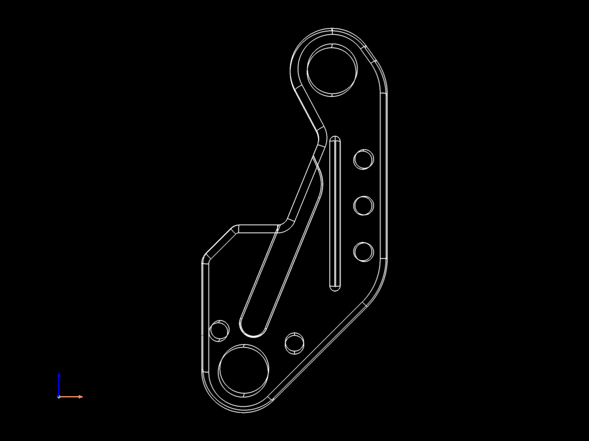
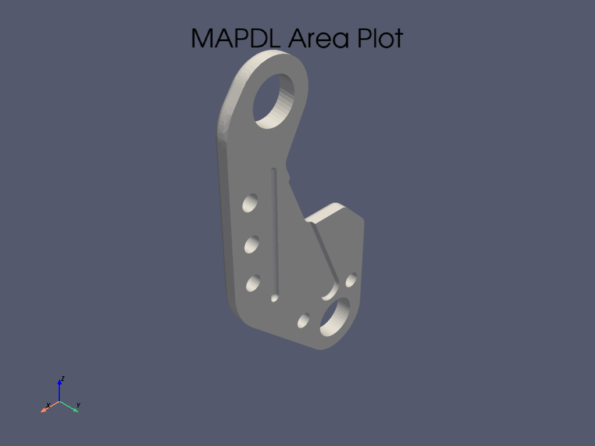
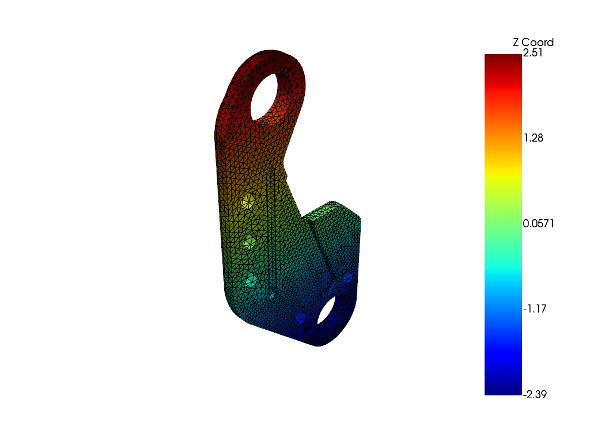

Note
Go to the end to download the full example code.
Plotting and Mesh Access#
PyMAPDL can load basic IGES geometry for analysis.
This example demonstrates loading basic geometry into MAPDL for analysis and demonstrates how to use the built-in Python specific plotting functionality.
This example also demonstrates some of the more advanced features of PyMAPDL including direct mesh access through VTK.
import numpy as np
from ansys.mapdl import core as pymapdl
from ansys.mapdl.core import examples
from ansys.mapdl.core.plotting import MapdlTheme
mapdl = pymapdl.launch_mapdl()
Load Geometry#
Here we download a simple example bracket IGES file and load it into
MAPDL. Since igesin must be in the AUX15 process
# note that this method just returns a file path
bracket_file = examples.download_bracket()
# load the bracket and then print out the geometry
mapdl.aux15()
mapdl.igesin(bracket_file)
print(mapdl.geometry)
MAPDL Selected Geometry
Keypoints: 188
Lines: 185
Areas: 73
Volumes: 1
Plotting#
PyMAPDL uses VTK and pyvista as a plotting backend to enable
remotable (with 2021R1 and newer) interactive plotting. The common
plotting methods (kplot, lplot, aplot, eplot, etc.)
all have compatible commands that use the
ansys.mapdl.core.plotting.visualizer.MapdlPlotter class. You can
configure this method with a variety of keyword arguments. For example:
mapdl.lplot(
show_line_numbering=False,
background="k",
line_width=3,
color="w",
show_axes=False,
show_bounds=True,
title="",
cpos="xz",
)

You can also configure a theme to enable consistent plotting across multiple plots. These theme parameters override any unset keyword arguments. For example:
my_theme = MapdlTheme()
my_theme.background = "white"
my_theme.cmap = "jet" # colormap
my_theme.axes.show = False
my_theme.show_scalar_bar = False
mapdl.aplot(theme=my_theme, quality=8)

Accessesing Element and Nodes Pythonically#
PyMAPDL also supports element and nodal plotting using eplot and
nplot. First, mesh the bracket using SOLID187 elements. These
are well suited to this geometry and the static structural analyses.
# set the preprocessor, element type and size, and mesh the volume
mapdl.prep7()
mapdl.et(1, "SOLID187")
mapdl.esize(0.075)
mapdl.vmesh("all")
# print out the mesh characteristics
print(mapdl.mesh)
ANSYS Mesh
Number of Nodes: 50565
Number of Elements: 32115
Number of Element Types: 1
Number of Node Components: 0
Number of Element Components: 0
You can access the underlying finite element mesh as a VTK grid
through the mesh.grid attribute.
This UnstructuredGrid contains a powerful API, including the ability to access the nodes, elements, original node numbers, all with the ability to plot the mesh and add new attributes and data to the grid.
grid.points # same as mapdl.mesh.nodes
pyvista_ndarray([[-2.03111884e-01, -5.87401575e-02, 4.44426114e-04],
[-2.03111884e-01, 0.00000000e+00, 4.44426114e-04],
[-2.03111884e-01, -2.93700787e-02, 4.44426114e-04],
...,
[-4.51418296e-01, -1.54326811e-01, -6.17372990e-01],
[ 4.95126147e-01, -8.12234933e-02, 1.09901235e+00],
[-3.92050102e-01, -1.86903380e-01, -2.85033703e-01]],
shape=(50565, 3))
cell representation in VTK format
array([ 10, 15180, 15181, ..., 21973, 48857, 48856], shape=(353265,))
Obtain node numbers of the grid
grid.point_data["ansys_node_num"]
pyvista_ndarray([ 1, 2, 3, ..., 50563, 50564, 50565],
shape=(50565,), dtype=int32)
Save arbitrary data to the grid
# must be sized to the number of points
grid.point_data["my_data"] = np.arange(grid.n_points)
grid.point_data
pyvista DataSetAttributes
Association : POINT
Active Scalars : ansys_node_num
Active Vectors : None
Active Texture : None
Active Normals : None
Contains arrays :
ansys_node_num int32 (50565,) SCALARS
vtkOriginalPointIds int64 (50565,)
origid int64 (50565,)
VTKorigID int64 (50565,)
my_data int64 (50565,)
Plot this mesh with scalars of your choosing. You can apply the same MapdlTheme when plotting as it’s compatible with the grid plotter.
# make interesting scalars
scalars = grid.points[:, 2] # z coordinates
sbar_kwargs = {"color": "black", "title": "Z Coord"}
grid.plot(
scalars=scalars,
show_scalar_bar=True,
scalar_bar_args=sbar_kwargs,
show_edges=True,
theme=my_theme,
)

This grid can be also saved to disk in the compact cross-platform VTK
format and loaded again with pyvista or ParaView.
..code:: pycon
>>> grid.save('my_mesh.vtk')
>>> import pyvista
>>> imported_mesh = pyvista.read('my_mesh.vtk')
Stop mapdl#
mapdl.exit()
Total running time of the script: (0 minutes 13.445 seconds)